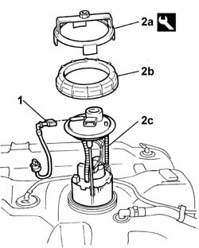
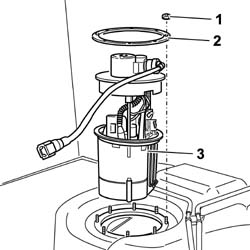

1040A71 submerged pump assembly complete with fuel guage - r r with tank removed
- Path
- Procedures > 10 ENGINE > 1040 FUEL TANK AND PIPES > 1040A FUEL TANK AND COMPONENTS > 1040A71 submerged pump assembly complete with fuel guage - r r with tank removed
- Kind
- repair procedure (removal / refitting; the operation number is the code)
- Applies to
- engines: 1.2 8v, 1.4 8v, 1.6 16v; all production periods
- Interactive page
- https://sloeber94.github.io/elrnDB-fDbl/en/#/2584227
Applies to: engines: 1.2 8v, 1.4 8v; all production periods
 Removing
Removing
 Refitting
Refitting1. Disconnect the rear section of the single supply pipe from the pump.
2. Using the tool (2a), undo the ring nut (2b) and remove the fuel pump (2c).
 | Name | Country |
|---|---|---|
2a | Tool. for removing. fuel pump retaining ring nut | 1.854.033.000 |

Applies to: engines: 1.2 8v, 1.4 8v; all production periods
Refitting
RemovingFit the fuel pump and tighten the ring nut.
Tighten the ring nut to torque using the special tool.
| Name | Country |
|---|---|---|
- | Tool. for removing. fuel pump retaining ring nut | 1.854.033.000 |
 | Fastening | Component | Ø | Value (daNm) |
|---|---|---|---|---|
- | - | SUBMERGED FUEL PUMP RING NUT | - | 0.6 |
Connect the rear section of the single supply pipe to the pump.
Applies to: engines: 1.6 16v; all production periods; only with equipment: Cargo trim level and BIPOWER
Removing
Refitting1. Unscrew the retaining nuts.
2. Remove the retaining ring nut.
3. Withdraw the immersed pump assembly.

Applies to: engines: 1.6 16v; all production periods; only with equipment: Cargo trim level and BIPOWER
Refitting
RemovingFit the immersed pump assembly.
Fit the retaining ring nut and secure it by means of the nuts.